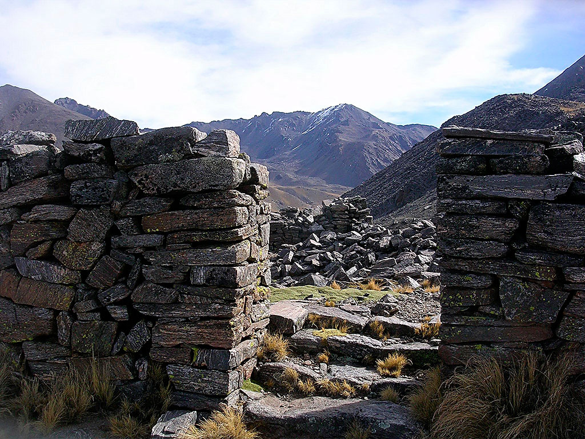
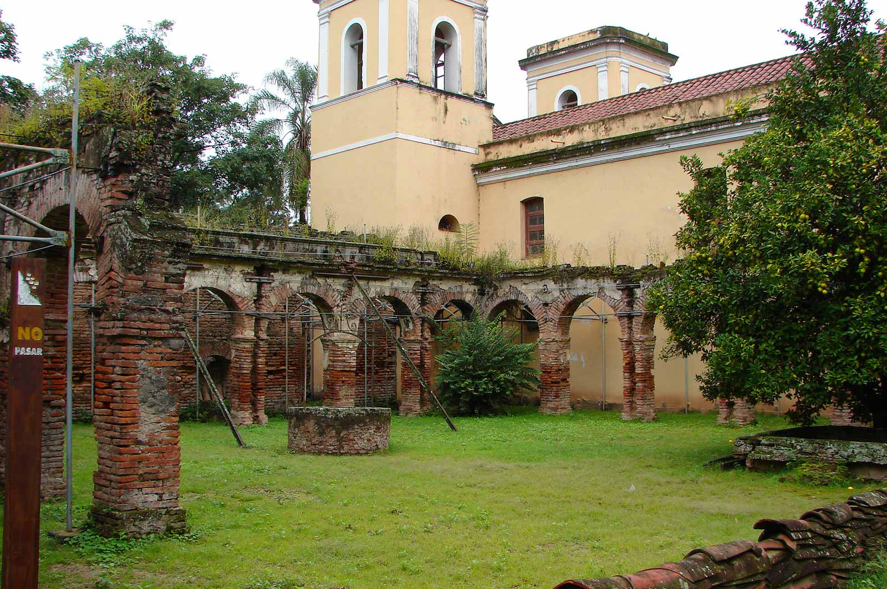

¿Puede imaginarse estar frente a pircas, menhires y piedras que datan de hace cientos de años y que aún conservan sus raíces prehispánicas?
Quien visite Tucumán no solamente respirará el aire puro de los cerros o caminará las calles de la ciudad de la Independencia: palpitará además un legado arqueológico único, testimonio de las culturas precolombinas que forman parte de la identidad de la provincia.
Los Valles Calchaquíes fueron el escenario predilecto de las primitivas razas y etnias, por lo que conservan una tradición riquísima que lo hará regresar en el tiempo y sentirse parte de estas obras de arte.
En esta sección, el turista podrá conocer cuáles son los sitios arqueológicos más importantes de Tucumán, sus atractivos, su historia y su increíble herencia.
Circuito Las Yungas
El visitante podrá conocer lugares paradisíacos en este circuito y disfrutará de la paz y la infinidad de actividades en Yerba Buena, de las lomas y quebradas soñadas de Villa Nougués, de los cerros y la vista panorámica única de la ciudad desde San Javier y de los bosques verdes y tupidos de Raco y El Siambón. Además, descubrirá el testimonio de una de las fábricas azucareras más destacadas de la provincia en el ex ingenio San Pablo y podrá relajarse en un atardecer frente al dique El Cadillal.
Ciudad Histórica
Sin duda, el primer circuito que debe recorrer el turista es el de Ciudad Histórica, donde se sumergirá en las raíces de la provincia que vio nacer en sus calles a la Independencia Argentina. En este paseo, conocerá los edificios y lugares cívicos más importantes del Norte Argentino como ser la Casa Histórica, la Plaza Independencia, museos y galerías de arte, iglesias empapadas de historia y callecitas de adoquines con color autóctono, entre otros de significativa importancia.
Circuitos Turísticos
Tucumán encierra algunos de los destinos más paradisíacos de Argentina. Con la ventaja de tener distancias cortas y buen clima durante todo el año, cada uno de los circuitos turísticos que ofrece la provincia invita a vivir una experiencia única entre la historia que guarda la ciudad y la magia de su vegetación, sus diques, cerros y valles.
Circuito Valles Calchaquíes
Recorrido turístico por excelencia que busca el acceso al Norte Argentino a través de las montañas. Tierra extraordinaria que ofrece miles de sorpresas con un encanto antiguo, donde historia, naturaleza, tradiciones, arqueología y mitos, forman una alianza excepcional. Lo que la constituye en una región turística de inevitable asombro.
Recorrer este circuito le tomará al visitante como mínimo dos días, ya que la oferta de lugares para visitar es bastante amplia. Si la idea es realizar además algunas de las actividades que ofrece el turismo aventura, deberán disponer de más tiempo.
Entre las distintas actividades que ofrece, se destacan: cabalgatas, mountain bike, recorridos en 4x4, trekking, etc.
Circuito Valle de Choromoro
Otro de los paseos de los cuales el turista se enamorará es el del Valle de Choromoro, en el que el verde de los cerros y un clima agradable lo invitarán a conocer culturas precolombinas, monumentos coloniales, yacimientos arqueológicos y legados históricos que merecen ser explorados.
Reconocido por ser una de las mejores zonas productivas de Argentina, este hermoso Valle, se caracteriza por la actividad agrícola-ganadera, destacándose la cría de ganado y también sus tambos que dan lugar a la fabricación de quesillos, quesos y de dulces artesanales. Otros destacados son sus conocidos cultivos de higos, como también sus criaderos de pollos.
A lo largo de la Ruta Provincial Nº 312, el visitante descubrirá paisajes únicos, valles ideales para olvidarse del tiempo y disfrutar de la naturaleza.
Circuito Sur
Este recorrido por el sur tucumano invita al turista a conocer algunas de las ciudades más pujantes de la provincia y a empaparse de la historia de pueblos que crecen año tras año y conservan sus sellos distintivos, como Lules, Monteros, Concepción, las Ruinas de la Ciudacita, el parque Cochuna y nada menos que la capital nacional del Sulky: Simoca.
Circuito Las Yungas
El visitante podrá conocer lugares paradisíacos en este circuito y disfrutará de la paz y la infinidad de actividades en Yerba Buena, de las lomas y quebradas soñadas de Villa Nougués, de los cerros y la vista panorámica única de la ciudad desde San Javier y de los bosques verdes y tupidos de Raco y El Siambón. Además, descubrirá el testimonio de una de las fábricas azucareras más destacadas de la provincia en el ex ingenio San Pablo y podrá relajarse en un atardecer frente al dique El Cadillal.
Ciudad Histórica
Sin duda, el primer circuito que debe recorrer el turista es el de Ciudad Histórica, donde se sumergirá en las raíces de la provincia que vio nacer en sus calles a la Independencia Argentina. En este paseo, conocerá los edificios y lugares cívicos más importantes del Norte Argentino como ser la Casa Histórica, la Plaza Independencia, museos y galerías de arte, iglesias empapadas de historia y callecitas de adoquines con color autóctono, entre otros de significativa importancia.

Ruinas La Ciudacita
Los estudios realizados demuestran que las ruinas representan el extremo sud del imperio incaico. Consisten en recintos construidos escalonados sobre el filo, a partir de un campo ceremonial de forma rectangular, de 40 metros de ancho por 60 metros de largo denominado en el lenguaje incaico “Kalasasaya”. La obra impresiona por el tamaño de la superficie y la calidad del trabajo realizado con piedras lajas de color grisáceo. Las pircas tienen una altura de un metro y se observan los destrozos realizados por el paso del tiempo y la acción de guanacos y otros mamíferos.
El este, se accede hacia otro grupo de recintos y luego el camino continúa ascendiendo, ya hacia el oeste, en busca del Portezuelo de Los Campos Colorados que tiene casi la misma altura de las ruinas. Luego de traspasarlo, el camino desciende en dirección de Ampajango, provincia de Catamarca.
Es evidente que construyeron el pueblo para establecer relaciones con los hombres del llano, y en ese lugar, por cuanto permite una visión abierta de la zona donde nace el sol. Estas ruinas, por su técnica constructiva, tienen relación directa con las ruinas de la antigua Fortaleza del Campo Pucará, en el Valle de Las Estancias. Estas poblaciones fueron desocupadas hacia mitad del siglo XVII, al terminar la segunda guerra calchaquí. Los conquistadores españoles realizaron cabalgatas para erradicar la población indígena y ubicarlas en las encomiendas del bajo tucumano donde las obligaban a trabajar en la agricultura.
Las ruinas forman parte del Parque Nacional Los Alisos, ubicado al sur de la provincia. Para visitarlas, se debe ir acompañado de guías expertos en estas actividades de montañismo. Puede consultar los prestadores habilitados en: PRESTADORES
Para más información o para dar aviso de tu llegada, podés contactarte directamente con la administración del Parque Nacional.
Contacto: (03865) 15405985 / (03865) 15405987
Ruinas de Condorhuasi
Entre el verde de los valles, el azul del cielo y el marrón de los suelos, la historia de las Ruinas de Condorhuasi impactará al turista.
Localizadas en El Pichao, a 8 kilómetros de Colalao del Valle, estas ruinas fueron el lugar en donde se refugiaron algunos aborígenes después de la caída de los indios Quilmes en manos de los españoles en 1667. El sitio ya había sido ocupado anteriormente por grupos indígenas de agricultores y pastores poco después del comienzo de la era cristiana, y se desarrolló especialmente entre los años 1000 y 1500.
puede recorrer la parte central, que posee una superficie cubierta con terrazas de cultivo, obras de irrigación y estructuras habitacionales realizadas en piedra, similares a las de los Quilmes, lo que hace suponer que también fueron un pueblo desarrollado.
Otro paseo interesante son los cementerios en los que el visitante se enterará de datos curiosos como los entierros de adultos realizados en cestas de piedra cubiertos por una piedra plana o los de niños, inhumados en urnas de alfarería.
Para acceder a las ruinas, se debe realizar una caminata de aproximadamente 300 metros en donde se descubrirán estos vestigios arqueológicos a la vera del río el Pichao.

Ruinas de San José de Lules
No es en vano que las Ruinas de San José de Lules sean Monumento Histórico Nacional desde 1944 ya que son un vivo testimonio de la época de la conquista española y sitio en donde los jesuitas cultivaron por primera vez la caña de azúcar.
Están formadas por una antigua capilla y un convento que fueron fundados por la Compañía de Jesús en 1670. Desbordados de historia, allí se ubican los dormitorios, el almacén, los talleres y el colegio donde estudiaban los indios Lules. Además, allí funcionó el primer colegio público de la Argentina. Actualmente, en la antigua sacristía, funciona el museo.
Sin embargo, eso no es todo: Manuel Belgrano y José de San Martín acamparon en este lugar durante las guerras de Independencia.
La visita a San José de Lules se puede hacer de diferentes maneras ya que el camino es de muy fácil acceso. Si el visitante desea realizarlo de manera particular, podrá llegar a ellas desde la ciudad capital, por Ruta Provincial Nº 301 recorriendo aproximadamente 18 kilómetros, 2 antes de encontrar el acceso a la ciudad de Lules.
Otras opciones son el traslado por transporte público desde terminal de ómnibus o bien contratar alguna excursión con una agencia privada. Para consultar por los prestadores que realizan las mismas puede ingresar a: AGENCIAS RECEPTIVAS
Las Ruinas de Lules se pueden visitar en los horarios de: 9 a 18 hs.